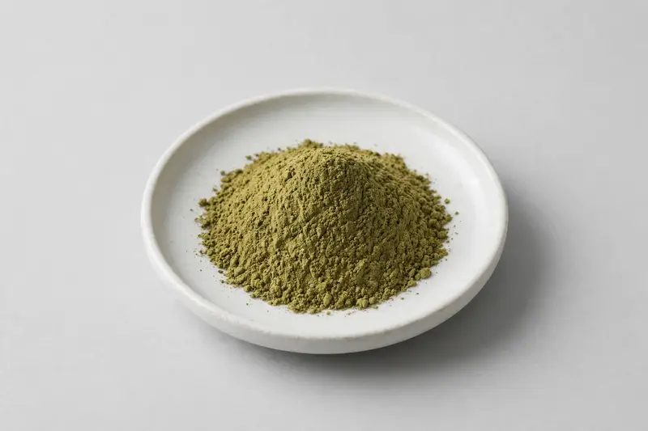

Lotus Leaf — a nuciferine-standardized leaf extract for weight-management and tea-blend formulations.

Overview
Lotus leaf extract is produced from the leaf of Nelumbo nucifera and typically standardized to nuciferine, an alkaloid associated with the leaf's market positioning. Buyers commonly request grades from 2% to 10% for weight-management oriented supplements and tea blends. We operate as a Xi'an-based trading company sourcing through vetted partner producers and confirming each target nuciferine specification before quoting.
Specifications below reflect commonly requested options in the market — not a stock list. Share your target spec and we'll confirm exactly what we can supply, honestly.
| Specification | Details |
|---|---|
| Botanical identity | Lotus leaf extract powder (Nelumbo nucifera leaf) |
| Marker compound | Commonly requested spec grades: nuciferine 2%, 5%, 10% (HPLC, as agreed) |
| Appearance | Yellow-green to olive-green-brown, sometimes tan fine powder |
| Mesh size | Typically 80–100 mesh (confirm per inquiry) |
| Testing | COA/TDS arranged on request; scope agreed per your spec |
Applications
Documentation
We don't claim in-house labs or certifications we don't hold. COA and TDS documents can be arranged on request, and testing scope is agreed against your specification before supply.
FAQ
Related products
Hesperidin (Citrus spp.)
Key marker: Hesperidin 90-98%
View specs →Betaine (trimethylglycine)
Key marker: Betaine 96-99%
View specs →Theobroma cacao
Key marker: Theobromine 10-20%
View specs →Curcumin
Key marker: Curcuminoids 95% HPLC
View specs →Piperine
Key marker: Piperine 95-98% HPLC
View specs →Send your target spec and volumes — we'll respond with a tailored quotation.
Request a Quote